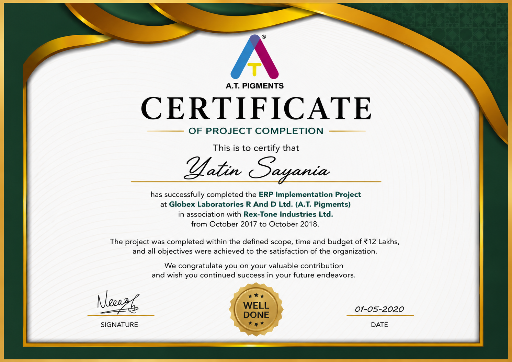
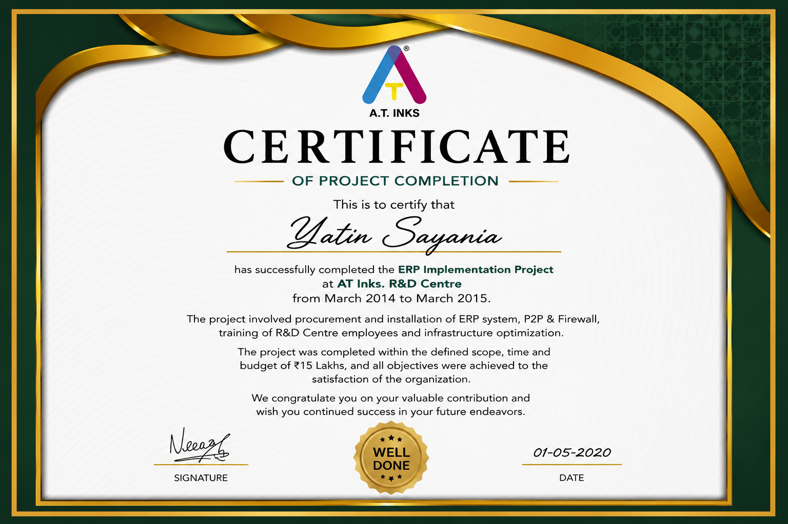
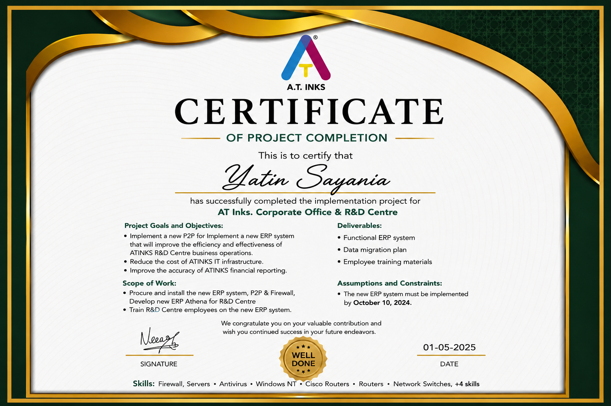

Yatin Sayania
Senior IT Manager
Infrastructure • Cybersecurity • Microsoft 365 • Cloud Technologies
Infrastructure • Cybersecurity • Microsoft 365 • Cloud Technologies
Experienced IT leader with expertise in enterprise infrastructure, Microsoft 365, networking, cybersecurity, cloud adoption, backup and disaster recovery. Focused on improving reliability, security and business efficiency through technology.
IT Experience
Managed Endpoints
Infrastructure Uptime
Governance & Compliance

Enterprise documentation pack.

ISO 27001 and hardening templates.

Hands-on container learning.